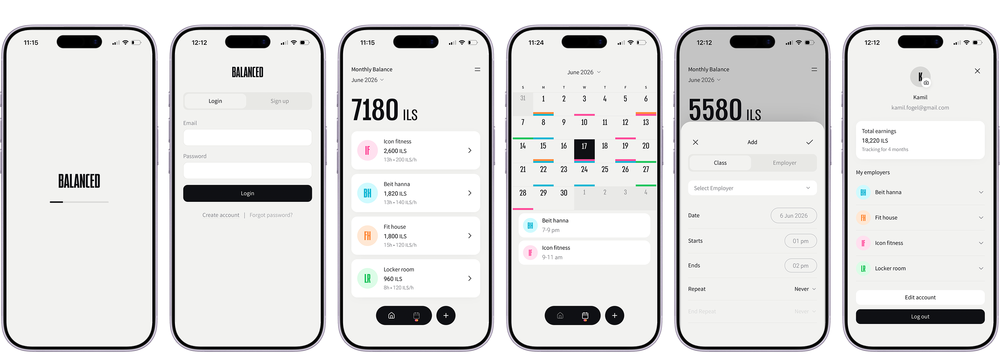
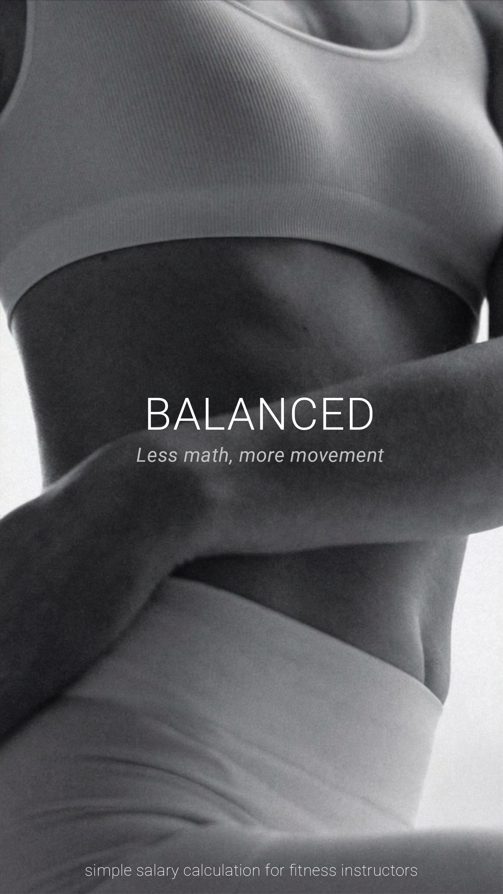
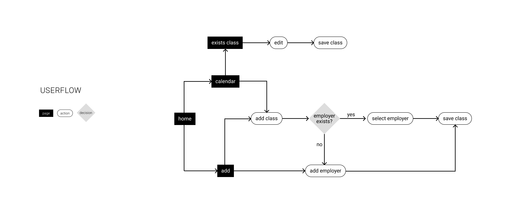
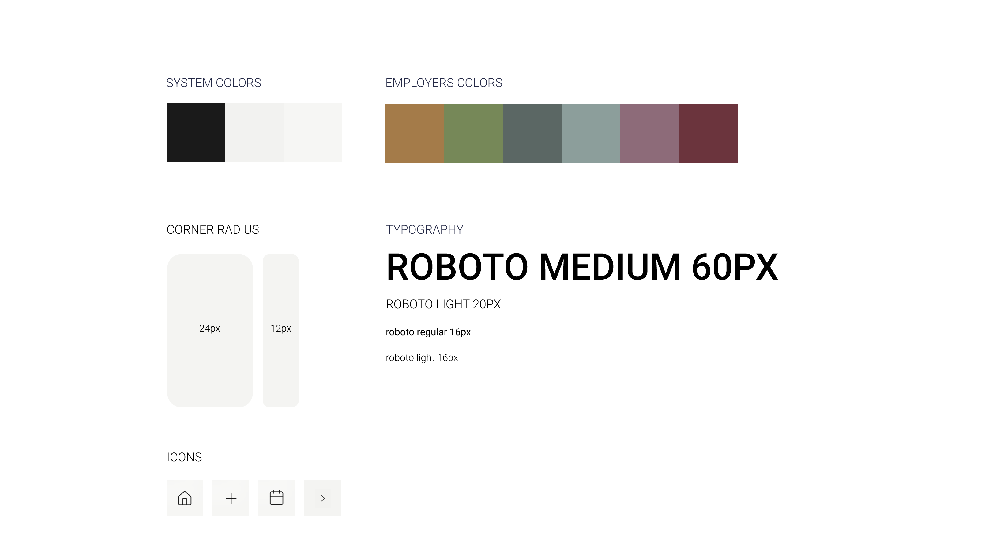

Balanced


about
Balanced is a smart work-calendar tool designed for independent fitness professionals. It bridges the gap between standard calendars and invoicing, providing full automation for monthly salary calculations. The project was born out of personal necessity while I worked as a Pilates instructor throughout my degree studies, designed and developed by me using Figma and Cursor.
research
I mapped out the existing market to understand why current solutions fall short for my colleagues and me. While Generic Calendars (Google/Apple) are excellent for time management, they lack a financial data layer and cannot perform “hours x rate” manipulations. On the other hand, Invoicing Software (Morning/Green Invoice) focuses only on the end of the process - document production - without helping the user calculate how much money they should actually demand, leaving the cross-referencing manual and tedious. The “pain” for trainers in Israel is not in managing the calendar itself, but in the wasted time and human errors created by the need to manually bridge the gap between their schedule and their bank account at the end of every month.

the problem
The end of the month becomes a logistical nightmare: manually reviewing every shift in the calendar, classifying them by employer, matching rates and venues, and rebuilding totals before invoicing. It is slow, easy to get wrong, and pulls attention away from clients and training.
the solution
Smart Calendar Integration keeps each session in context - employer, location, and pay - so the calendar remains the single source of truth. Dynamic Earnings Dashboard rolls sessions into live monthly totals by employer and rate. One-Click Invoice Ready output aligns billing with what you actually taught, not what you remembered to copy into another tool.

design system
The visual language bridges high-energy fitness with structured finance. It pairs bold typography and saturated colors with clean, minimalist cards and a clear information hierarchy.

the next step
I am currently designing and developing an in-app PDF invoice generation flow. Users will be able to generate documents directly from their dashboard and instantly share them via WhatsApp or email in a single click. This feature will close the loop for entire administrative workflow for fitness trainers.